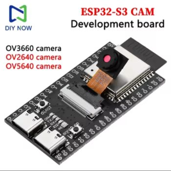

ESP32-S3 CAM board
$6.20Use 1Buy 1 (board only)
The drone's onboard computer. Runs the flight stabilizer, streams camera video to the laptop over WiFi, and receives the fly brain's commands: turn, climb, dodge.
- Chip
- ESP32-S3 N16R8, dual-core 240 MHz
- Memory
- 16 MB flash, 8 MB PSRAM
- Wireless
- 2.4 GHz WiFi, Bluetooth 5 LE
- Ports
- 2× USB-C, 24-pin DVP camera connector
- Size
- Full dev-board size, roughly 6 × 2.5 cm